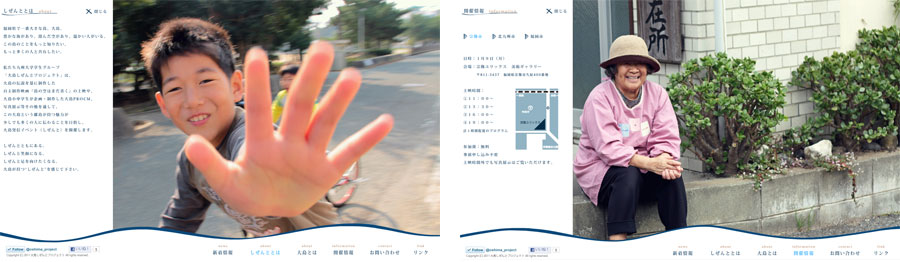
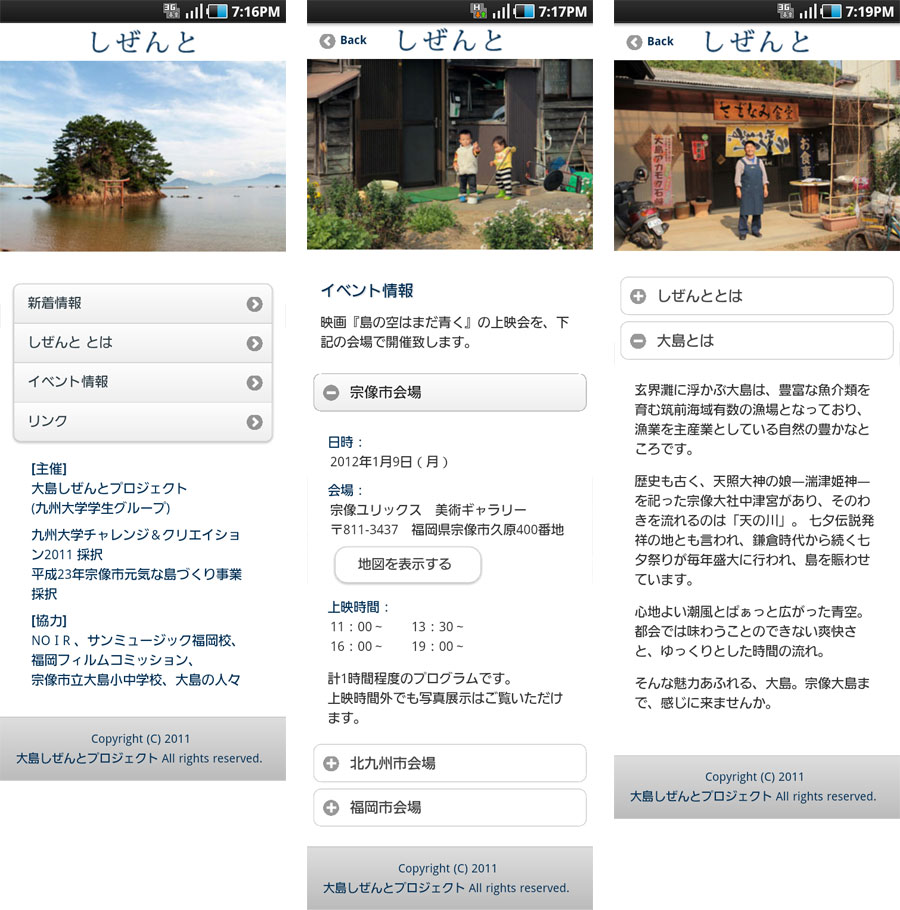

大島発信イベント≪しぜんと≫ 公式Webサイト
九州大学学生グループ「大島しぜんとプロジェクト」による、福岡県・大島の魅力を
自主制作映画の上映や写真展示等を通して伝えていく大島発信イベント≪しぜんと≫のWebサイトです。
- 制作期間
- 2011年11月中旬〜
(2011年12月4日 サイトオープン) - 使用ツール
- Illustrator / Photoshop / Dreamweaver / Flash
- コンセプト
- 大島のしぜんと、ゆっくりとした時間
- 備考
- 単独制作・スマートフォン対応

